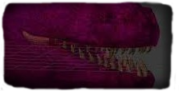
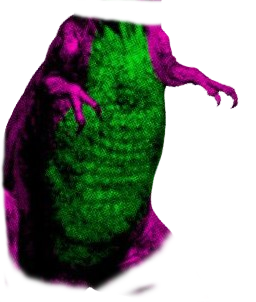

Clique nas areas Coloridas!

Dentes e Boca
Apesar de sua aparência articulada, paleontólogos agora acreditam que Barney deve ter um crânio rígido para conseguir realizar seus golpes esmagadores. A mordida esmagadora de Barney conseguiria esmagar um carro, aplicando até seis toneladas de pressão nas suas vítimas indefesas, uma força entre 8 000 e 13 000 newtons, Isto equivale a um elefante de tamanho médio sentando em você..

Barriga
Com grande vantagem, Barney consegue segurar (tankar), e rebater qualquer ataque canalizado em energia com sua barriga, com grande concentração de músculo, e não banha, Barney consegue revidar com o dobro da FORÇA, e não somente se defender, mas consegue efetuar golpes de curto espaço com sua barriga!

Rabo
Com sua calda, Barney consegue criar ondas de choques(ventos) de larga escala, podendo bater de frente até mesmo com as Asas afiadas de Garibaldo, Barney também consegue abrir crateras em rochas ao balançar de sua calda, causando terremotos de laga escala, devido ao seu peso ser 10x MAIOR de que Garibaldo, Barney consegue criar ondas de Tornadas ao Balançar rapidamente suas terrível calda de aço! achas que estais seguro?